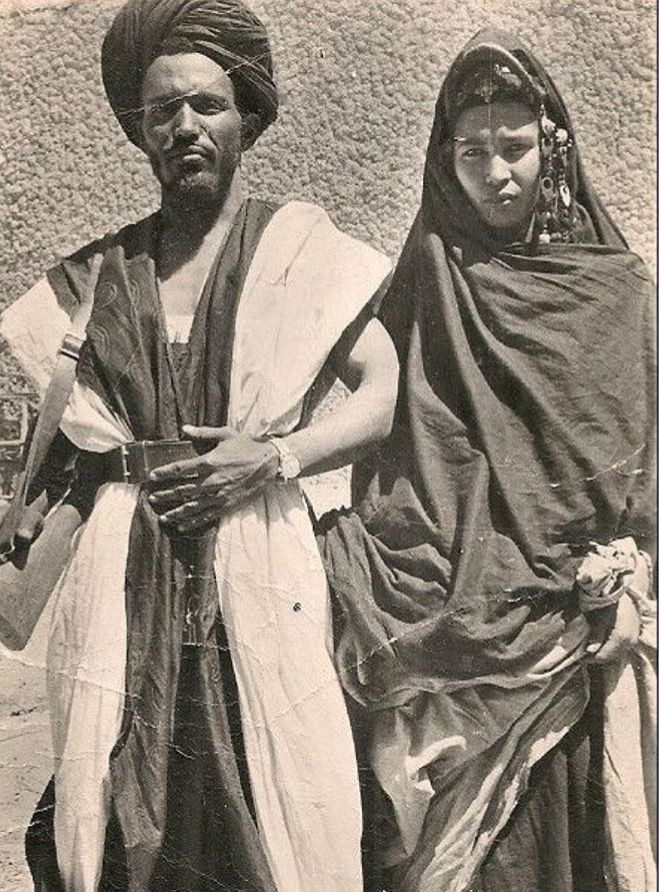
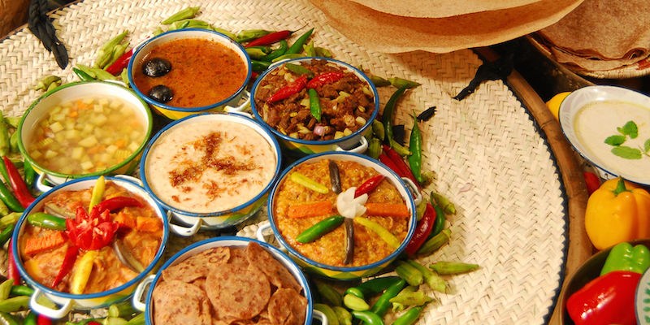

1 / 3

تُراث السودان
من الصحيح أن المساحة الجغرافية الواسعة للسودان ، أدّت إلى اختلاف الفنون الشعبية والعادات والتقاليد من بلدٍ إلى آخر لأن لكل دولةٍ عاداتها وتقاليدها، إلا أنها تشترك بصورة عامة بدلالتها على مجتمع قبلي وتشتهر القبائل السودانية بمحافظتها على تقاليدها التي ترتبط ارتباطًا وثيقًا مع المناسبات الدينية، مثل: عيد الأضحى، وعيد الفطر، وكذلك في المناسبات الشخصية كمراسم الزواج والمآتم
2 / 3

الزي السوداني الشعبي
بسبب المساحة الجغرافية الواسعة للسودان, تختلف أشكال الزي باختلاف الأقاليم و المناطق داخل السودان
إقرأ المزيد3 / 3

أشهر الأكلات الشعبية السودانية
لكل دولة الوصفات التي تميزها في طرق الطبخ ، و قد تتشابه بعضها في المكونات أو طريقة التحضير و لكن يبقى الطعم مميز لصانعه ، و قد تميز المطبخ السوداني بعدد من الوصفات الرائعة ، و التي يميزها مذاقها الحار و البهارات
إقرأ المزيد